Ninox · AI onboarding · 2025
Who Controls the AI?
Low-code apps, built from a schema.
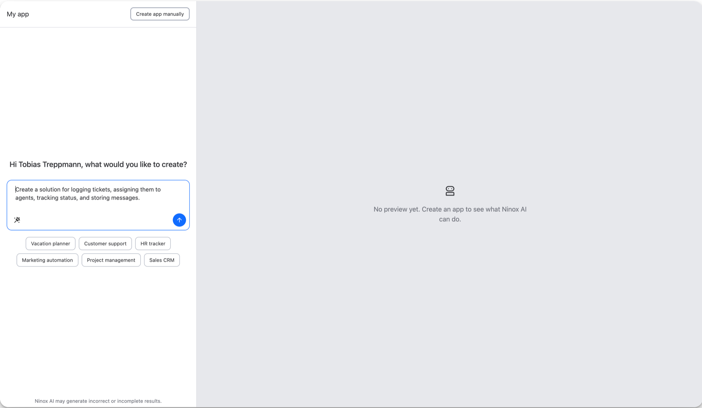
Ninox · AI onboarding · 2025
Who Controls the AI?
Low-code apps, built from a schema.
The problem
Powerful once a schema exists.
Defining it was the gate.


One sentence in
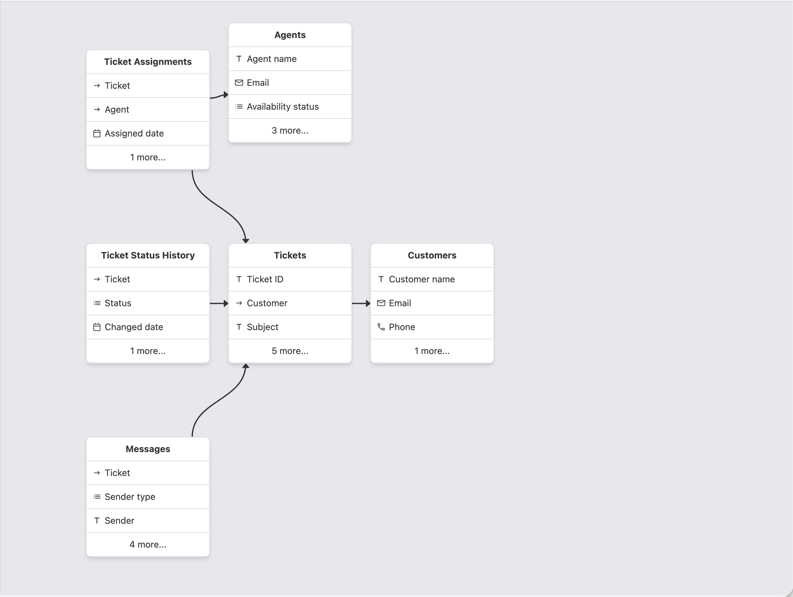
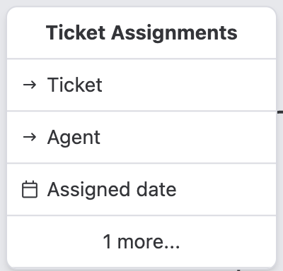
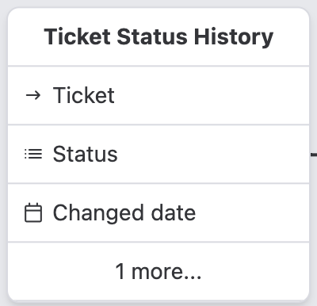
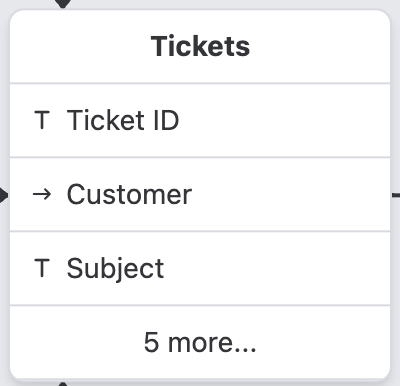
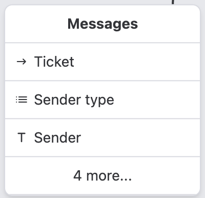
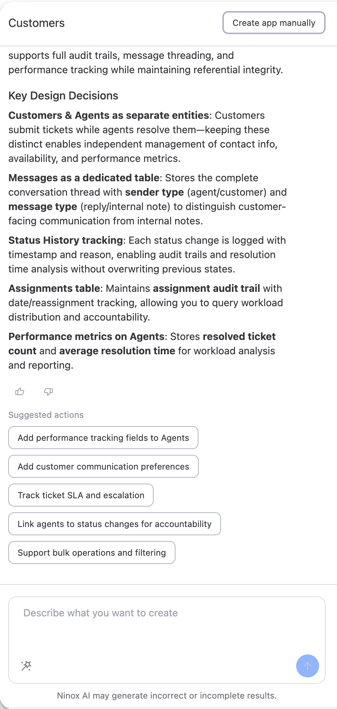
The decision
Chat alone wouldn't work.
Show the output. Let them edit it.
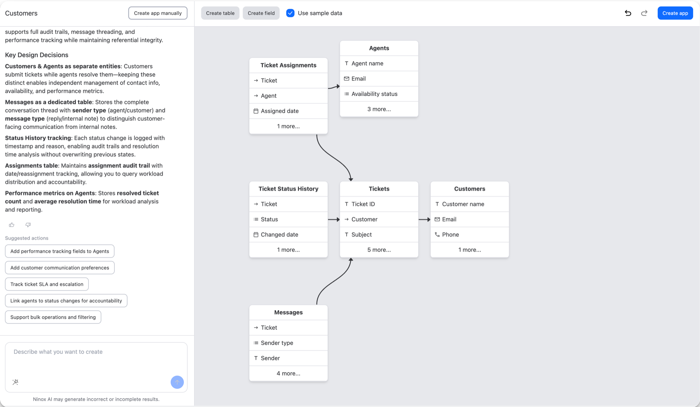
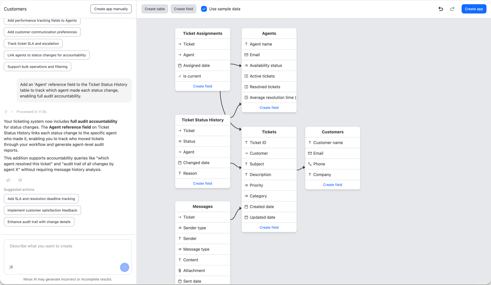
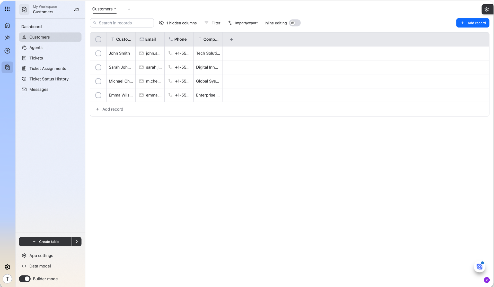
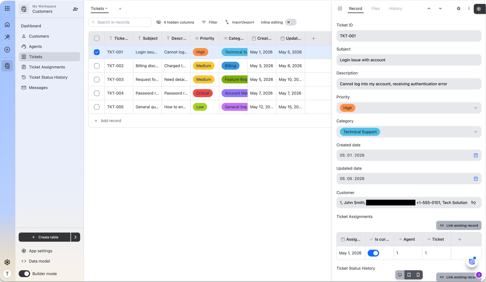
The outcome
No AI mode to leave.
ShippedNinox AI public beta, 2026.
Case study